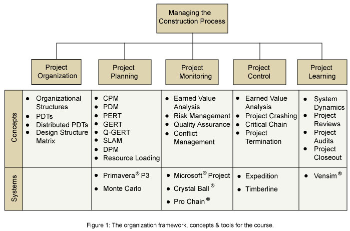

Veranstaltungstermine
Vorlesungen: 2 Einheiten pro Woche, je 1,5 Stunden
Übungen (Recitations): 1 Einheit pro Woche, je 1 Stunde
Dozent
Dr. Nathaniel Osgood
Senior Lecturer, Department of Civil & Environmental Engineering, MIT
Kursbeschreibung
Mit zunehmender technologischer Integration und wachsender Komplexität im Bauwesen verlängern sich auch die Vorlaufzeiten von Bauprojekten. Um wettbewerbsfähig zu bleiben, versuchen Unternehmen, die Bauzeiten neuer Infrastruktur zu verkürzen, indem sie ihre Bauvorhaben mit Hilfe unterschiedlicher Projektmanagement-Werkzeuge wirksam steuern. In diesem Kurs werden drei zentrale Aspekte des Bauprojektmanagements vermittelt:
- die Theorie, Methoden und quantitativen Werkzeuge, mit denen Bauprojekte wirksam geplant, organisiert und gesteuert werden;
- effiziente Managementmethoden, die sich aus Praxis und Forschung ergeben haben;
- praxisnahes, anwendungsorientiertes Projektmanagementwissen aus realen Baustellensituationen und Exkursionen.
Dazu verwenden wir ein grundlegendes Projektmanagement-Rahmenwerk, das den Projektlebenszyklus in die Phasen Organisieren, Planen, Überwachen, Steuern und Lernen aus abgeschlossenen und laufenden Bauprojekten gliedert (siehe Abbildung 1). Innerhalb dieses Rahmens lernen Sie die für jeden Prozessabschnitt erforderlichen Methoden und Werkzeuge kennen – ebenso wie die Theorien, auf denen sie aufbauen. Am Ende des Semesters sind Sie in der Lage, das Rahmenwerk anzupassen und anzuwenden, um ein Bauprojekt in einer Organisation aus Architektur, Ingenieurwesen und Bauausführung (A/E/C) wirksam zu managen.

Der Kursstoff gliedert sich in fünf große Abschnitte (siehe Abbildung 1): Projektorganisation, Projektplanung, Projektüberwachung, Projektsteuerung und Projektlernen. Im Folgenden beschreiben wir die Inhalte der einzelnen Abschnitte im Detail.
Abschnitt 1: Projektorganisation
Die Projektorganisation umfasst die Auswahl einer geeigneten Organisationsstruktur für das Projekt sowie den Aufbau des Organisationsstrukturplans (Organizational Breakdown Structure, OBS). Durch eine Analyse des Informationsbedarfs im Projekt (d. h. wer benötigt Informationen von wem) lassen sich Projektteams und eine Berichtsstruktur festlegen. Behandelt werden insbesondere verschiedene Produktentwicklungsprozesse sowie die Design Structure Matrix.
Abschnitt 2: Projektplanung
Die Projektplanung umfasst den Aufbau des Projektstrukturplans (Work Breakdown Structure, WBS) und dessen Zuordnung zum bestehenden OBS. Darüber hinaus werden ein Projektbudget und ein Kostenstrukturplan (Cost Breakdown Structure) entwickelt und mit OBS und WBS verknüpft. Zur Planungsphase gehört außerdem die Festlegung eines angemessenen Terminplans unter Berücksichtigung von Ressourcenrestriktionen. Schließlich muss die Projektleitung anerkennen, dass sich nur wenige (wenn überhaupt) der vorliegenden Schätzungen und Prognosen später als zutreffend erweisen werden; sie muss daher bereits bei der Projektplanung Risikofaktoren und deren mögliche Auswirkungen auf Termine, Budget, Qualität und Umwelt einkalkulieren.
Zu den behandelten Planungsmethoden gehören:
- die Methode des kritischen Pfades (Critical Path Method, CPM)
- die Vorgangsknoten-Netzplantechnik (Precedence Diagramming Method, PDM)
- die Program Evaluation and Review Technique (PERT)
- die Graphical Evaluation and Review Technique (GERT)
- Queue – Graphical Evaluation and Review Technique (Q-GERT)
- die Simulation Language for Alternative Modelling (SLAM)
- die Dynamic Planning and Control Methodology (DPM)
- die Critical-Chain-Planung
- die Ressourceneinsatzplanung (Resource Loading)
Der Projektleitung stehen zahlreiche Softwarewerkzeuge für die deterministische und probabilistische Planung zur Verfügung, etwa Microsoft® Project, Primavera Project Planner®, Primavera® Monte Carlo, Crystal Ball® und ProChain®. In diesem Kurs verwenden wir:
- Primavera® P3 — für die deterministische Termin- und Ressourcenplanung
- Primavera® Monte Carlo — für die probabilistische Termin- und Ressourcenplanung
- Primavera® Expedition — für die Dokumentation mehrerer und komplexer Projekte
- ProChain® — für die Terminplanung nach der Critical-Chain-Methode
- Crystal Ball® — für die Risikoanalyse
- Vensim® — für System-Dynamics-Analysen
Abschnitt 3: Projektüberwachung
Die Projektüberwachung bezeichnet die Strukturen und Kennzahlen, mit denen der Fortschritt eines Projekts über dessen gesamte Laufzeit verfolgt wird. Für die Projektleitung sind dabei insbesondere folgende Fragen von Interesse:
- Schreitet das Projekt planmäßig voran?
- Wird das Projekt innerhalb des bewilligten Budgets abgeschlossen?
- Wird das Produkt die erwartete Leistung erbringen?
- Wie effizient und wie schnell werden Abweichungen bei Terminen, Budget oder Qualität erfasst, gemeldet und behandelt?
Die Earned-Value-Analyse ist eines der Projektmanagement-Werkzeuge, die bei der Beantwortung dieser Fragen helfen. Die Berichte bauen auf der zuvor festgelegten Organisations- und Berichtsstruktur auf.
Abschnitt 4: Projektsteuerung
Auf Grundlage der im Überwachungssystem gesammelten Informationen können Korrekturmaßnahmen erforderlich werden, um ein Projekt auf Kurs zu halten. Der Abschnitt Projektsteuerung beschreibt Techniken, mit denen aus dem Ruder gelaufene Projekte wieder ausgerichtet werden können. Korrekturmaßnahmen können in vielen Bereichen nötig sein, etwa beim Leistungsumfang, bei der Produktleistung, beim Terminplan und beim Budget. Projektsteuerung erfordert zudem eine lückenlose Nachvollziehbarkeit, wann und wie Basispläne geändert wurden, sowie ein klares Verständnis und eine saubere Dokumentation der Projektkonfigurationen.
Abschnitt 5: Projektlernen
Projektlernen wird von Organisationen als einer der wichtigsten Erfolgsfaktoren für aktuelle und künftige Projekte anerkannt. Durch Lebenszyklus- und Post-mortem-Analysen kann die Projektleitung Bereiche identifizieren, die in künftigen Projekten stärker beachtet oder enger geführt werden sollten. Dazu gehören:
- Ressourcenzuteilung,
- Risiko und Unsicherheit,
- Budgetrestriktionen,
- Projektdurchführbarkeit und
- Änderungsmanagement.
Eine wertvolle Methodik, die in den letzten Jahren für das Management von Lernprozessen eingesetzt wird, ist die Simulation. In diesem Kurs führen wir die System-Dynamics-Simulationsmethodik ein, mit der sich bestimmte Leistungsparameter eines Projekts bewerten lassen.
Kursorganisation
Vorlesungen und Übungen
Der Kursstoff wird in einer Folge von Vorlesungen und Übungen vermittelt. Die Vorlesungszeit dient der Vermittlung des Stoffes und der Diskussion im Plenum.
Die Übungen unterstützen und vertiefen den Vorlesungsstoff durch praktische Anwendung. Konkret werden in den Übungen notwendige Grundlagen bereitgestellt, Beispiele besprochen und Fragen zur Anwendung der Theorie in der Praxis beantwortet. Bitte beachten Sie, dass die Teilnahme an den Übungen verpflichtend ist.
Abgabe und Bewertung der Übungsaufgaben
Alle Übungsaufgaben werden elektronisch verteilt und eingereicht. Bitte reichen Sie alle Dateien im Microsoft®-Office-Format ein (falls Sie keinen Zugang zur entsprechenden Software haben, wenden Sie sich bitte nach der Vorlesung an den Dozenten).
Die Kursnote wird auf individueller Basis und auf Teambasis vergeben. Beim Semesterprojekt wird die Arbeit von einer Gruppe Studierender erledigt, die wie ein Unternehmen zusammenarbeitet. Die Teamnote für das Semesterprojekt ergibt sich aus den Projektunterlagen. Aus der Projektnote erhält jedes Mitglied eine individuelle Note, die von seinem Einsatz und seinen Beiträgen abhängt, wie sie von den übrigen Gruppenmitgliedern bewertet werden. Jede Person erhält eine Note, die der Projektnote multipliziert mit einem Faktor entspricht. Dieser Faktor kann kleiner oder größer als eins sein. Der Durchschnitt der Einzelnoten entspricht der Teamnote. Effektive Teamarbeit ist damit eine Voraussetzung für eine gute Note; sollten die Umstände im Team jedoch ein schwieriges Umfeld schaffen, werden Einzelne nicht für die Fehler anderer verantwortlich gemacht. Übungsblätter, die im Team bearbeitet werden, werden entsprechend bewertet. Semesterprojekt, Übungsblätter und Mitarbeit ergeben zusammen 100 % der Note.
Ihre Endnote berechnet sich wie folgt:
| Leistung | Anteil |
|---|---|
| Übungsblätter | 35 % (sieben Übungsblätter à 5 %) |
| Semesterprojekt | 50 % |
| Aktive Mitarbeit | 15 % |
Für die volle Punktzahl müssen Übungsblätter und Projektphasen vor Beginn der Vorlesung am jeweiligen Abgabetermin (siehe Kursübersicht) eingereicht werden. Bei verspäteter Abgabe werden pro Tag 10 % abgezogen, maximal bis zu sieben Tage. Übungsblätter und Projektphasen, die nach sieben Tagen eingehen, werden nicht mehr gewertet. Unter bestimmten mildernden Umständen können Fristverlängerungen gewährt werden. Bitte wenden Sie sich vor dem Abgabetermin an eine Lehrperson oder eine Übungsleitung, falls eine Verlängerung erforderlich ist.
Die Zusammenarbeit zwischen Studierenden bei Übungsblättern oder Projektphasen, die einzeln zu bearbeiten sind, ist auf das Diskutieren von Konzepten und das Klären von Fragen beschränkt. Jede und jeder Studierende muss dennoch eigene Lösungen zu den Aufgaben erstellen. Weitere Hinweise finden Sie im Abschnitt zur wissenschaftlichen Redlichkeit weiter unten.
Die Zusammenarbeit bei Übungsblättern oder Projektphasen, die im Team zu bearbeiten sind, ist ausdrücklich erwünscht. Das Team reicht nur ein Dokument für die gesamte Gruppe ein.
Das Semesterprojekt dieses Kurses gliedert sich in vier Phasen mit vier Abgaben (TP I bis TP IV) – eine je Phase – und wird von einer Gruppe Studierender bearbeitet, die als Unternehmen agiert. Wie bereits erwähnt, erhält jedes Team auf Grundlage dieser vier Abgaben eine Gesamtnote für das Projekt. Die Projektnoten werden für jede Person entsprechend ihrem individuellen Beitrag zum Projekt angepasst. Zur Ermittlung der individuellen Beiträge wird in jeder Projektphase eine Peer-Evaluation durchgeführt. Dabei verteilt jedes Teammitglied einen finanziellen „Bonus" unter den Teammitgliedern, gibt für jedes Mitglied eine Empfehlung ab, bewertet dessen Wirkung auf die Teammoral, bewertet dessen Beitrag zum Semesterprojekt und vergibt an jedes Mitglied – einschließlich der Person, die das Formular ausfüllt – einen „Titel". Es wird erwartet, dass diese Bewertung individuell ausgefüllt und vertraulich behandelt wird. Ebenso wird erwartet, dass sich die Teammitglieder beim Ausfüllen professionell und ehrlich verhalten. Jede Absprache mit anderen Teammitgliedern beim Ausfüllen der Bewertung ist strengstens untersagt.
Hinweis: Zur individuellen Mitarbeit zählen die Beteiligung an Vorlesungen, Laborterminen, Diskussionen im Unterricht, Sprechstunden und Diskussionsforen.
Wissenschaftliche Redlichkeit
Das Department of Civil and Environmental Engineering hält sich an strengste Maßstäbe wissenschaftlicher Redlichkeit. Ein wichtiger Baustein dabei ist, dass die Studierenden die Erwartungen der Lehrenden in Bezug auf wissenschaftliche Redlichkeit kennen. Diese Erklärung soll die Erwartungen für diesen Kurs verdeutlichen.
Aufgaben, Übungsblätter und Semesterprojekte, die von Studierenden zur Abgabe bearbeitet werden, dienen zwei Zwecken:
- Sie sind Lernmittel, die den Studierenden helfen, den Kursstoff zu beherrschen. Dazu gehören die in Vorlesung und Übung vermittelten Konzepte, Theorien, Methoden und Werkzeuge ebenso wie Kompetenzen wie die Arbeit im Team.
- Sie helfen den Lehrenden zu beurteilen, wie gut jede und jeder Studierende den Kursstoff beherrscht.
Die Richtlinien des Departments zur wissenschaftlichen Redlichkeit sollen diese beiden Zwecke in Einklang bringen und gelten, sofern nicht anders angegeben, für alle Aufgaben.
Studierende, die diesen Kurs aktuell belegen, dürfen gemeinsam allgemeine Lösungsansätze für Aufgaben entwickeln. Sofern für eine bestimmte Aufgabe nichts anderes festgelegt ist, muss die eingereichte Arbeit jedoch vollständig selbstständig erstellt werden. Das gilt für Texte, numerische Berechnungen, mathematische Herleitungen, Diagramme, Grafiken, Computerprogramme und deren Ausgaben. Es wird außerdem erwartet, dass Sie die Quelle aller Informationen, die nicht von Ihnen selbst stammen, ordnungsgemäß angeben. Das schließt jedes Buch, jeden Artikel, jede Webseite, jede Präsentation und jede persönliche Korrespondenz ein, die Sie für Ihre Arbeit verwendet haben.
Ebenso ist es unzulässig, in früheren Jahren eingereichte Aufgaben, Übungsblätter oder Projekte als Quelle zu verwenden, sofern nicht ausdrücklich anders angegeben.
Wenn Sie Fragen dazu haben, wie diese Richtlinien auf eine konkrete Situation anzuwenden sind, wenden Sie sich bitte zur Klärung an das Lehrpersonal dieses Kurses.